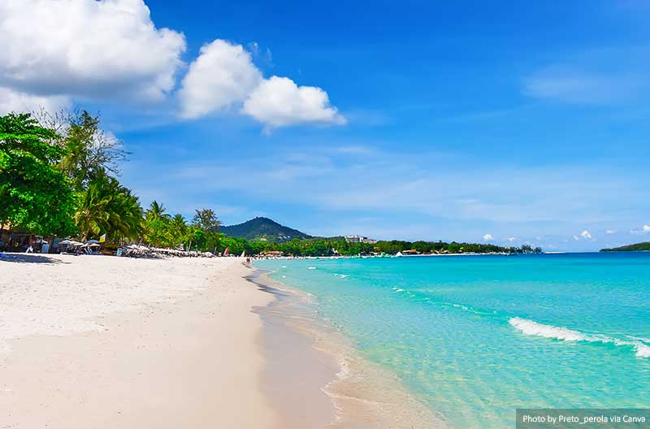
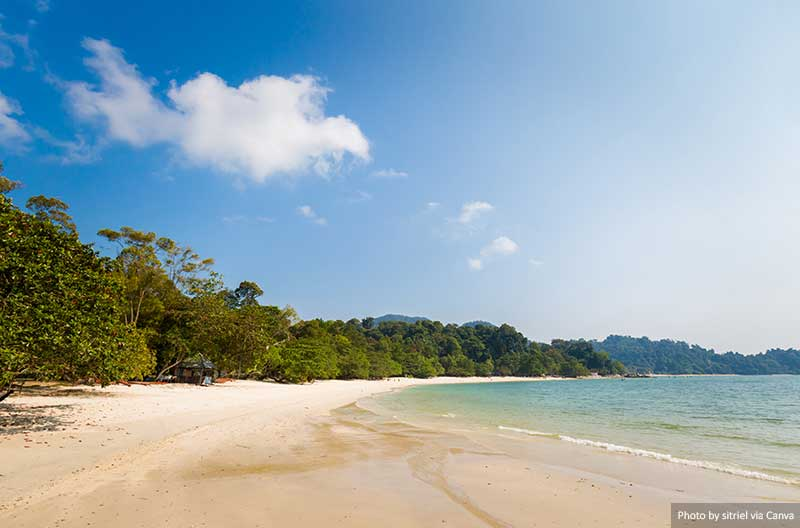
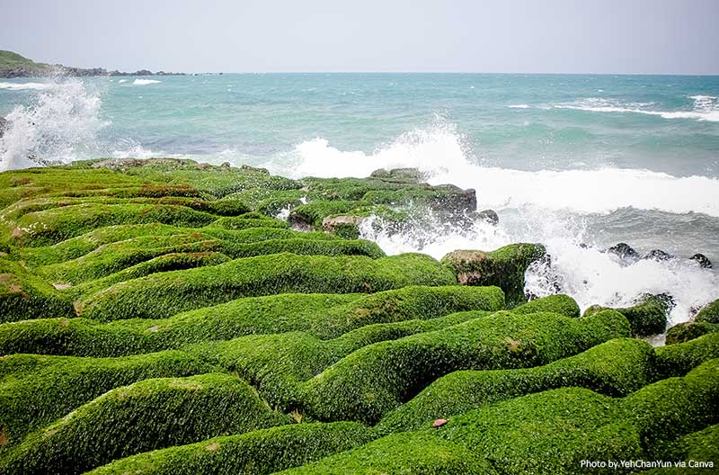
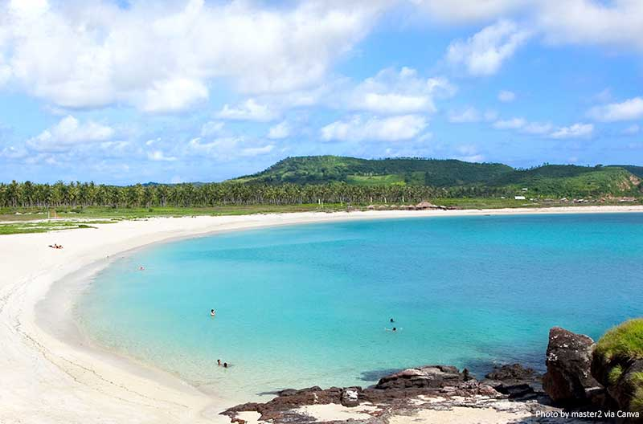
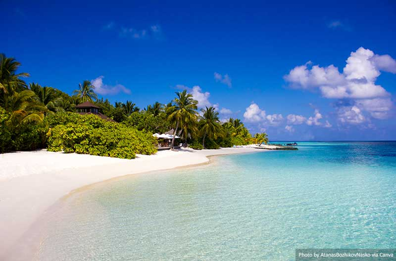
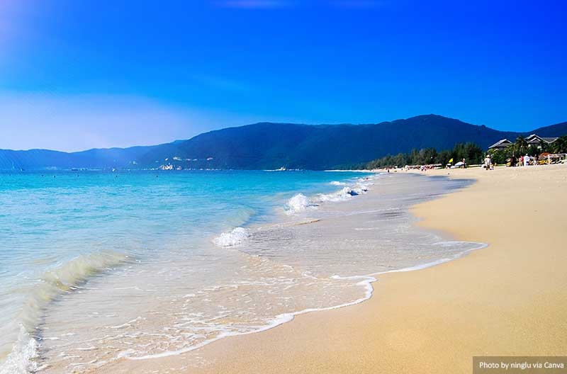

Ashley Bess
Asia offers a diverse mix of culture, cuisine, history and extraordinary nature reserves, making it an attractive travel spot for many. In fact, one of the most talked-about travel highlights has always been the breathtaking, beautiful beach destinations in the region. If you are in Asia, check out some of these beautiful beaches.
Chaweng Beach is in the eastern part of Koh Samui, an island of Thailand. It is one of the liveliest and most popular beaches on the island, and in many ways, it carries a lot of characteristics of Samui island itself. Known for its clear and calm waters, the long stretch of white sandy beach is well-maintained and offers much tranquillity and relaxation for travellers who are ready to let their hair down. For the adventure seekers, it also has a wide range of water activities to keep the excitement going.
Coral Beach is in Pangkor Island, approximately 3.5 kilometres from Peninsular Malaysia. It is a quiet, low-key beach destination that has retained its original characteristics without being decked out by rowdy bars or chains of restaurants. The casual and soft sandy beach is great for lounging around during a care-free vacation. The clear waters also made is a great site for water sports such as swimming, snorkelling kayaking or jet skiing. If time permits, stick around to experience the spectacular sunset view that many visitors rave about.
Laomei Green Reef is in the Northern part of Taiwan, and is a spectacular sight unlike no other. Particularly in April and May, after the monsoon season, vibrant green algae will cover the neat rows of volcanic stone troughs. This creates a rare and beautiful phenomenon that is not just Instagram worthy but also makes your every effort of getting there worth it. The history of these volcanic stone troughs was reported as far back as two hundred thousand years ago when the Datun volcanoes erupted. If you wish to catch this beautiful sight, then make sure you visit when it is low tide so the stones are not submerged in the water
Manza Beach is a beautiful beach destination in Asia that is known to be connected to great facilities, accommodation, and extensive water activities. Located in Okinawa, overlooking the East China Sea, this 300-meter-long picturesque sandy beach with clear blue water is the dream beach vacation that has so much to offer. Regarded by many as the best beach destination in the peninsular, it has lured many international travellers with its charming and tranquil setup. It is also from this beach that visitors can catch the view of the iconic elephant’s trunk-shaped cliff, Cape Manzamo, a famous scenic rock formation in Okinawa.

Morjim Beach has been touted as a poet’s paradise with a beautiful skyline and home to stunning sunsets. This is also the nesting habitat of the endangered Olive Ridley sea turtle, which is why the area has been preserved by a high level of wildlife protection under the Indian law.
This beautiful Asian beach destination is also locally known as “Little Russia” because it is very popular amongst Russian tourists. As a result, many local eateries and restaurants were converted to serving Russian cuisine alongside Goan food.
In addition, Morjim Beach also offers a plethora of water sports adventures for the adventurer types and a good mix of quiet spots for those who prefer lounging around. If you intend to take a swim in the deep ocean, do keep a lookout for dolphins! You may just be the lucky few to spot them.
Nusa Penida is a small island in the South-eastern part of Bali. It comprises several beaches such as Atuh Beach, Kelingking Beach, Angel’s Billabong Crystal Bay Beach, and Broken Beach. The island was once regarded as the black magic island. It was believed that dark spirits were banished to the island by the priests of Bali, which is why the name of the island is literally translated as Priests (Penida) Island (Nusa). However, the authentic natural charm of this beach island has overcome these old stigmas.
Even without elaborate beach hotels or bars, Nusa Penida beaches have been drawing travellers from near and far because of its uncharacteristic beauty. Take a hike to the multiple cliff points near the beaches for a panoramic shot. Or take a dive into the clear sea that may grant you a chance to swim with manta rays! Whether you decide to do a day trip or short stay, it is still an experience of a lifetime.
Palawan is a long island on the Western part of the Philippines. It has often been regarded as one of the best destinations in the world. In fact, the island has recently won the “The World’s Best Awards 2019” title by Travel+Leisure.
Make sure to visit the famous El Nido where the stunning sea view, secret lagoons and limestone formations are sure to impress any beach lovers. Also take a trip to Coron Bay. Here the beautiful landscape is sure to impress first-timers on the island. This is also an interesting spot for divers because of its numerous reefs and WWII shipwrecks that were left behind by the surprised 1944 raid on fleeing Japanese ships.
Tanjung Aan Beach is an iconic beach of Lombok that has preserved its rural form, untouched by modern developments. The white sandy beach overlooks the Indian Ocean and stretches two kilometres long. It is great for snorkelling and swimming because the water is always calm and safe. You can also hire a local boat which will allow you to enjoy the turquoise sea and the peacefulness of this natural site.
Veligandu Island Beach stretches 600 meters long and is considered one of the best and most beautiful beaches in the Maldives. The unique experience starts from taking a seaplane from Male Airport followed by a 15-minute journey complete with breathtaking views. This beach offers an exclusive and private experience that is most suitable for a quiet retreat or romantic trip for honeymooners. Do not be deceived by the size of the island, there is no shortage of activities to keep you occupied. The island also offers luxurious resort stays and its staff provide the best service to all visitors.
Yalong Bay stretches as far as 7.5 kilometres long and is located in the Southeast part of Sanya City, Hainan Province. Known as the Hawaii of the East, it is reputed as China’s top beach destination. Laced with soft white sand and crystal-clear water which can reach a depth of eight meters. This makes it an ideal site for diving and snorkelling. Yalong Bay is also facilitated by countless resorts, restaurants, and amenities so that travellers can have a complete experience without having to step out of the beach destination.
Summary
These are just some of the many beautiful beaches that you’ll find throughout Asia. You may also be interested to read some of our suggestions of the best beach destinations to visit in Europe.